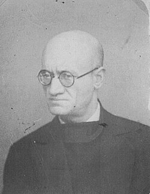
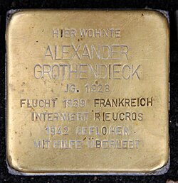
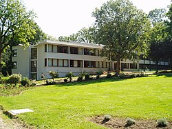

Alexander Grothendieck | |
|---|---|
Grothendieck in Montréal (1970) | |
| Born | 28 March 1928 |
| Died | 13 November 2014 (aged 86) Saint-Lizier, Ariège, France |
| Citizenship | |
| Alma mater | |
| Known for | Renewing algebraic geometry and synthesis between it and number theory and topology List of things named after Alexander Grothendieck |
| Awards |
|
| Scientific career | |
| Fields | Functional analysis Algebraic geometry Homological algebra |
| Institutions | |
| Thesis | Produits tensoriels topologiques et espaces nucléaires (1953) |
Doctoral students | |
Alexander Grothendieck, later Alexandre Grothendieck in French (/ˈɡroʊtəndiːk/; German: [ˌalɛˈksandɐ ˈɡʁoːtn̩ˌdiːk] ⓘ; French: [ɡʁɔtɛndik]; 28 March 1928 – 13 November 2014), was a German-born French mathematician who became the leading figure in the creation of modern algebraic geometry.[7][8] His research extended the scope of the field and added elements of commutative algebra, homological algebra, sheaf theory, and category theory to its foundations, while his so-called "relative" perspective led to revolutionary advances in many areas of pure mathematics.[7][9] He is considered by many to be the greatest mathematician of the twentieth century.[10][11]
Grothendieck began his productive and public career as a mathematician in 1949. In 1958, he was appointed a research professor at the Institut des hautes études scientifiques (IHÉS) and remained there until 1970, when, driven by personal and political convictions, he left following a dispute over military funding. He received the Fields Medal in 1966 for advances in algebraic geometry, homological algebra, and K-theory.[12] He later became professor at the University of Montpellier[1] and, while still producing relevant mathematical work, he withdrew from the mathematical community and devoted himself to political and religious pursuits (first Buddhism and later, a more Catholic Christian vision).[13] In 1991, he moved to the French village of Lasserre in the Pyrenees, where he lived in seclusion, still working on mathematics and his philosophical and religious thoughts until his death in 2014.[14]

Grothendieck was born in Berlin to anarchist parents. His father, Alexander "Sascha" Schapiro (also known as Alexander Tanaroff), had Hasidic Jewish roots and had been imprisoned in Russia before moving to Germany in 1922, while his mother, Johanna "Hanka" Grothendieck, came from a Protestant German family in Hamburg and worked as a journalist.[a] As teenagers, both of his parents had broken away from their early backgrounds.[16] At the time of his birth, Grothendieck's mother was married to the journalist Johannes Raddatz and initially, his birth name was recorded as "Alexander Raddatz." That marriage was dissolved in 1929 and Schapiro acknowledged his paternity, but never married Hanka Grothendieck.[16] Grothendieck had a maternal sibling, his half sister Maidi.
Grothendieck lived with his parents in Berlin until the end of 1933, when his father moved to Paris to evade Nazism. His mother followed soon thereafter. Grothendieck was left in the care of Wilhelm Heydorn, a Lutheran pastor and teacher in Hamburg.[17][18] According to Winfried Scharlau, during this time, his parents took part in the Spanish Civil War as non-combatant auxiliaries.[19][20] However, others state that Schapiro fought in the anarchist militia.[21]

In May 1939, Grothendieck was put on a train in Hamburg for France. Shortly afterward his father was interned in Le Vernet.[22] He and his mother were then interned in various camps from 1940 to 1942 as "undesirable dangerous foreigners."[23] The first camp was the Rieucros Camp, where his mother may have contracted the tuberculosis that would eventually cause her death in 1957. While there, Grothendieck managed to attend the local school, at Mende. He once managed to escape from the camp, intending to assassinate Hitler.[22] Later, his mother Hanka was transferred to the Gurs internment camp for the remainder of World War II.[22] Grothendieck was permitted to live separated from his mother.[24]
In the village of Le Chambon-sur-Lignon, he was sheltered and hidden in local boarding houses or pensions, although he occasionally had to seek refuge in the woods during Nazi raids, surviving at times without food or water for several days.[22][24]
His father was arrested under the Vichy anti-Jewish legislation, and sent to the Drancy internment camp, and then handed over by the French Vichy government to the Germans to be sent to the Auschwitz concentration camp in 1942 where he was murdered.[8][25]
In Le Chambon, Grothendieck attended the Collège Cévenol (now known as the Le Collège-Lycée Cévenol International), a unique secondary school founded in 1938 by local Protestant pacifists and anti-war activists. Many of the refugee children hidden in Le Chambon attended Collège Cévenol, and it was at this school that Grothendieck apparently first became fascinated with mathematics.[26]
In 1990, for risking their lives to rescue Jews, the entire village was recognized as "Righteous Among the Nations".
After the war, the young Grothendieck studied mathematics in France, initially at the University of Montpellier where at first he did not perform well, failing such classes as astronomy.[27] Working on his own, he rediscovered the Lebesgue measure. After three years of increasingly independent studies there, he went to continue his studies in Paris in 1948.[17]
Initially, Grothendieck attended Henri Cartan's Seminar at École Normale Supérieure, but he lacked the necessary background to follow the high-powered seminar. On the advice of Cartan and André Weil, he moved to the University of Nancy where two leading experts were working on Grothendieck's area of interest, topological vector spaces: Jean Dieudonné and Laurent Schwartz. The latter had recently won a Fields Medal. Dieudonné and Schwartz showed the new student their latest paper La dualité dans les espaces (F) et (LF); it ended with a list of 14 open questions, relevant for locally convex spaces.[28] Grothendieck introduced new mathematical methods that enabled him to solve all of these problems within a few months.[29][30][31][32][33][34][35]
In Nancy, he wrote his dissertation under those two professors on functional analysis, from 1950 to 1953.[36] At this time he was a leading expert in the theory of topological vector spaces.[37] In 1953 he moved to the University of São Paulo in Brazil, where he immigrated by means of a Nansen passport, given that he had refused to take French nationality (as that would have entailed military service against his convictions). He stayed in São Paulo (apart from a lengthy visit in France from October 1953 to March 1954) until the end of 1954. His published work from the time spent in Brazil is still in the theory of topological vector spaces; it is there that he completed his last major work on that topic (on "metric" theory of Banach spaces).
Grothendieck moved to Lawrence, Kansas at the beginning of 1955, and there he set his old subject aside in order to work in algebraic topology and homological algebra, and increasingly in algebraic geometry.[38][39] It was in Lawrence that Grothendieck developed his theory of abelian categories and the reformulation of sheaf cohomology based on them, leading to the very influential "Tôhoku paper".[40]
In 1957 he was invited to visit Harvard University by Oscar Zariski, but the offer fell through when he refused to sign a loyalty oath, a pledge promising not to work to overthrow the United States government—a refusal which, he was warned, threatened to land him in prison. The prospect of prison did not worry him, so long as he could have access to books.[41]
Comparing Grothendieck during his Nancy years to the École Normale Supérieure-trained students at that time (Pierre Samuel, Roger Godement, René Thom, Jacques Dixmier, Jean Cerf, Yvonne Bruhat, Jean-Pierre Serre, and Bernard Malgrange), Leila Schneps said:
He was so completely unknown to this group and to their professors, came from such a deprived and chaotic background, and was, compared to them, so ignorant at the start of his research career, that his fulgurating ascent to sudden stardom is all the more incredible; quite unique in the history of mathematics.[42]
His first works on topological vector spaces in 1953 have been successfully applied to physics and computer science, culminating in a relation between Grothendieck inequality and the Einstein–Podolsky–Rosen paradox in quantum physics.[43]

In 1958, Grothendieck was installed at the Institut des hautes études scientifiques (IHÉS), a new privately funded research institute that, in effect, had been created for Jean Dieudonné and Grothendieck.[6] Grothendieck attracted attention by an intense and highly productive activity of seminars there (de facto working groups drafting into foundational work some of the ablest French and other mathematicians of the younger generation).[17] Grothendieck practically ceased publication of papers through the conventional, learned journal route. However, he was able to play a dominant role in mathematics for approximately a decade, gathering a strong school.[44]
Officially during this time, he had as students Michel Demazure (who worked on SGA3, on group schemes), Monique Hakim (relative schemes and classifying topos), Luc Illusie (cotangent complex), Michel Raynaud, Michèle Raynaud, Jean-Louis Verdier (co-founder of the derived category theory), and Pierre Deligne. Collaborators on the SGA projects also included Michael Artin (étale cohomology), Nick Katz (monodromy theory, and Lefschetz pencils). Jean Giraud worked out torsor theory extensions of nonabelian cohomology there as well. Many others such as David Mumford, Robin Hartshorne, Barry Mazur and C.P. Ramanujam were also involved.
Alexander Grothendieck's work during what is described as the "Golden Age" period at the IHÉS established several unifying themes in algebraic geometry, number theory, topology, category theory, and complex analysis.[36] His first (pre-IHÉS) discovery in algebraic geometry was the Grothendieck–Hirzebruch–Riemann–Roch theorem, a generalisation of the Hirzebruch–Riemann–Roch theorem proved algebraically; in this context he also introduced K-theory. Then, following the programme he outlined in his talk at the 1958 International Congress of Mathematicians, he introduced the theory of schemes, developing it in detail in his Éléments de géométrie algébrique (EGA) and providing the new more flexible and general foundations for algebraic geometry that has been adopted in the field since that time.[17] He went on to introduce the étale cohomology theory of schemes, providing the key tools for proving the Weil conjectures, as well as crystalline cohomology and algebraic de Rham cohomology to complement it. Closely linked to these cohomology theories, he originated topos theory as a generalisation of topology (relevant also in categorical logic). He also provided, by means of a categorical Galois theory, an algebraic definition of fundamental groups of schemes giving birth to the now famous étale fundamental group and he then conjectured the existence of a further generalization of it, which is now known as the fundamental group scheme. As a framework for his coherent duality theory, he also introduced derived categories, which were further developed by Verdier.[45]
The results of his work on these and other topics were published in the EGA and in less polished form in the notes of the Séminaire de géométrie algébrique (SGA) that he directed at the IHÉS.[17]
Grothendieck's political views were radical and pacifistic. He strongly opposed both United States intervention in Vietnam and Soviet military expansionism. To protest against the Vietnam War, he gave lectures on category theory in the forests surrounding Hanoi while the city was being bombed.[46] In 1966, he had declined to attend the International Congress of Mathematicians (ICM) in Moscow, where he was to receive the Fields Medal.[7] He retired from scientific life around 1970 after he had found out that IHÉS was partly funded by the military.[47] He returned to academia a few years later as a professor at the University of Montpellier.
While the issue of military funding was perhaps the most obvious explanation for Grothendieck's departure from the IHÉS, those who knew him say that the causes of the rupture ran more deeply. Pierre Cartier, a visiteur de longue durée ("long-term guest") at the IHÉS, wrote a piece about Grothendieck for a special volume published on the occasion of the IHÉS's fortieth anniversary.[48] In that publication, Cartier notes that as the son of an antimilitary anarchist and one who grew up among the disenfranchised, Grothendieck always had a deep compassion for the poor and the downtrodden. As Cartier puts it, Grothendieck came to find Bures-sur-Yvette as "une cage dorée" ("a gilded cage"). While Grothendieck was at the IHÉS, opposition to the Vietnam War was heating up, and Cartier suggests that this also reinforced Grothendieck's distaste at having become a bureaucrat of the scientific world.[6] In addition, after several years at the IHÉS, Grothendieck seemed to cast about for new intellectual interests. By the late 1960s, he had started to become interested in scientific areas outside mathematics. David Ruelle, a physicist who joined the IHÉS faculty in 1964, said that Grothendieck came to talk to him a few times about physics.[b] Biology interested Grothendieck much more than physics, and he organized some seminars on biological topics.[48]
In 1970, Grothendieck, with two other mathematicians, Claude Chevalley and Pierre Samuel, created a political group entitled Survivre—the name later changed to Survivre et vivre. The group published a bulletin and was dedicated to antimilitary and ecological issues. It also developed strong criticism of the indiscriminate use of science and technology.[49] Grothendieck devoted the next three years to this group and served as the main editor of its bulletin.[1] The 27th of January 1972, he was invited to the CERN to give the conference « Will we continue scientific research ? ».[50]
Although Grothendieck continued with mathematical enquiries, his standard mathematical career mostly ended when he left the IHÉS.[8] After leaving the IHÉS, Grothendieck became a temporary professor at Collège de France for two years.[49] He then became a professor at the University of Montpellier, where he became increasingly estranged from the mathematical community. He formally retired in 1988, a few years after having accepted a research position at the CNRS.[1]
While not publishing mathematical research in conventional ways during the 1980s, he produced several influential manuscripts with limited distribution, with both mathematical and biographical content.
Produced during 1980 and 1981, La Longue Marche à travers la théorie de Galois (The Long March Through Galois Theory) is a 1600-page handwritten manuscript containing many of the ideas that led to the Esquisse d'un programme.[51] It also includes a study of Teichmüller theory.
In 1983, stimulated by correspondence with Ronald Brown and Tim Porter at Bangor University, Grothendieck wrote a 600-page manuscript entitled Pursuing Stacks. It began with a letter addressed to Daniel Quillen. This letter and successive parts were distributed from Bangor (see External links below). Within these, in an informal, diary-like manner, Grothendieck explained and developed his ideas on the relationship between algebraic homotopy theory and algebraic geometry and prospects for a noncommutative theory of stacks. The manuscript, which is being edited for publication by G. Maltsiniotis, later led to another of his monumental works, Les Dérivateurs. Written in 1991, this latter opus of approximately 2000 pages, further developed the homotopical ideas begun in Pursuing Stacks.[7] Much of this work anticipated the subsequent development during the mid-1990s of the motivic homotopy theory of Fabien Morel and Vladimir Voevodsky.
In 1984, Grothendieck wrote the proposal Esquisse d'un Programme ("Sketch of a Programme")[51] for a position at the Centre National de la Recherche Scientifique (CNRS). It describes new ideas for studying the moduli space of complex curves. Although Grothendieck never published his work in this area, the proposal inspired other mathematicians to work in the area by becoming the source of dessin d'enfant theory and anabelian geometry. Later, it was published in two-volumes and entitled Geometric Galois Actions (Cambridge University Press, 1997).
During this period, Grothendieck also gave his consent to publishing some of his drafts for EGA on Bertini-type theorems (EGA V, published in Ulam Quarterly in 1992–1993 and later made available on the Grothendieck Circle web site in 2004).
In the extensive autobiographical work, Récoltes et Semailles ('Harvests and Sowings', 1986), Grothendieck describes his approach to mathematics and his experiences in the mathematical community, a community that initially accepted him in an open and welcoming manner, but which he progressively perceived to be governed by competition and status. He complains about what he saw as the "burial" of his work and betrayal by his former students and colleagues after he had left the community.[17] Récoltes et Semailles was finally published in 2022 by Gallimard[52] and, thanks to French science historian Alain Herreman,[7] is also available on the Internet.[53] An English translation by Leila Schneps was scheduled to be published by MIT Press in 2025,[54] but as of May 2026 it is not yet available. A partial English translation can be found on the Internet.[55] A Japanese translation of the whole book in four volumes was completed by Tsuji Yuichi (1938–2002), a friend of Grothendieck from the Survivre period. The first three volumes (corresponding to Parts 0 to III of the book) were published between 1989 and 1993, while the fourth volume (Part IV) was completed and, although unpublished, copies of it as a typed manuscript are circulated. Grothendieck helped with the translation and wrote a preface for it, in which he called Tsuji his "first true collaborator".[56][57][58][59][60][61] Parts of Récoltes et Semailles have been translated into Spanish,[62] as well as into a Russian translation that was published in Moscow.[63]
In 1988, Grothendieck declined the Crafoord Prize with an open letter to the media. He wrote that he and other established mathematicians had no need for additional financial support and criticized what he saw as the declining ethics of the scientific community that was characterized by outright scientific theft that he believed had become commonplace and tolerated. The letter also expressed his belief that totally unforeseen events before the end of the century would lead to an unprecedented collapse of civilization. Grothendieck added however that his views were "in no way meant as a criticism of the Royal Academy's aims in the administration of its funds" and he added, "I regret the inconvenience that my refusal to accept the Crafoord prize may have caused you and the Royal Academy."[64]
La Clef des Songes,[65] a 315-page manuscript written in 1987, is Grothendieck's account of how his consideration of the source of dreams led him to conclude that a God exists.[66] As part of the notes to this manuscript, Grothendieck described the life and the work of 18 "mutants", people whom he admired as visionaries far ahead of their time and heralding a new age.[1] The only mathematician on his list was Bernhard Riemann.[67] Influenced by the Catholic mystic Marthe Robin who was claimed to have survived on the Holy Eucharist alone, Grothendieck almost starved himself to death in 1988.[1] His growing preoccupation with spiritual matters was also evident in a letter entitled Lettre de la Bonne Nouvelle sent to 250 friends in January 1990. In it, he described his encounters with a deity and announced that a "New Age" would commence on 14 October 1996.[7]
The Grothendieck Festschrift, published in 1990, was a three-volume collection of research papers to mark his sixtieth birthday in 1988.[68]
More than 20,000 pages of Grothendieck's mathematical and other writings are held at the University of Montpellier and remain unpublished.[69] They have been digitized for preservation and are freely available in open access through the Institut Montpelliérain Alexander Grothendieck portal.[70][71]
In 1991, Grothendieck moved to a new address that he did not share with his previous contacts in the mathematical community.[1] Very few people visited him afterward.[72] Local villagers helped sustain him with a more varied diet after he tried to live on a staple of dandelion soup.[73] At some point, Leila Schneps and Pierre Lochak located him, then carried on a brief correspondence. Thus they became among "the last members of the mathematical establishment to come into contact with him".[74] After his death, it was revealed that he lived alone in a house in Lasserre, Ariège, a small village at the foot of the Pyrenees.[75]
In January 2010, Grothendieck wrote the letter entitled "Déclaration d'intention de non-publication" to Luc Illusie, claiming that all materials published in his absence had been published without his permission. He asked that none of his work be reproduced in whole or in part and that copies of this work be removed from libraries.[76] He characterized a website devoted to his work as "an abomination".[77] His dictate may have been reversed in 2010.[78]
In September 2014, almost totally deaf and blind, he asked a neighbour to buy him a revolver so he could kill himself. His neighbour refused to do so.[79] On 13 November 2014, aged 86, Grothendieck died in the hospital of Saint-Lizier[79] or Saint-Girons, Ariège.[26][80]
Grothendieck was born in Weimar Germany. In 1938, aged ten, he moved to France as a refugee. Records of his nationality were destroyed in the fall of Nazi Germany in 1945 and he did not apply for French citizenship after the war. Thus, he became a stateless person for at least the majority of his working life and he traveled on a Nansen passport.[3][4][5] Part of his reluctance to hold French nationality is attributed to not wishing to serve in the French military, particularly due to the Algerian War (1954–62).[6][5][15] He eventually applied for French citizenship in the early 1980s, after he was well past the age that would have required him to do military service.[6]
Grothendieck was very close to his mother, to whom he dedicated his dissertation. She died in 1957 from tuberculosis that she contracted in camps for displaced persons.[49]
He had five children: a son with his landlady during his time in Nancy;[6] three children, Johanna (1959), Alexander (1961), and Mathieu (1965) with his wife Mireille Dufour;[1][41] and one child with Justine Skalba, with whom he lived in a commune in the early 1970s.[1]
Grothendieck's early mathematical work was in functional analysis. Between 1949 and 1953 he worked on his doctoral thesis in this subject at Nancy, supervised by Jean Dieudonné and Laurent Schwartz. His key contributions include topological tensor products of topological vector spaces, the theory of nuclear spaces as foundational for Schwartz distributions, and the application of Lp spaces in studying linear maps between topological vector spaces. In a few years, he had become a leading authority on this area of functional analysis—to the extent that Dieudonné compares his impact in this field to that of Banach.[81]
It is, however, in algebraic geometry and related fields where Grothendieck did his most important and influential work. From approximately 1955 he started to work on sheaf theory and homological algebra, producing the influential "Tôhoku paper" (Sur quelques points d'algèbre homologique, published in the Tohoku Mathematical Journal in 1957) where he introduced abelian categories and applied their theory to show that sheaf cohomology may be defined as certain derived functors in this context.[17]
Homological methods and sheaf theory had already been introduced in algebraic geometry by Jean-Pierre Serre[82] and others, after sheaves had been defined by Jean Leray. Grothendieck took them to a higher level of abstraction and turned them into a key organising principle of his theory. He shifted attention from the study of individual varieties to his relative point of view (pairs of varieties related by a morphism), allowing a broad generalization of many classical theorems.[49] The first major application was the relative version of Serre's theorem showing that the cohomology of a coherent sheaf on a complete variety is finite-dimensional; Grothendieck's theorem shows that the higher direct images of coherent sheaves under a proper map are coherent; this reduces to Serre's theorem over a one-point space.
In 1956, he applied the same thinking to the Riemann–Roch theorem, which recently had been generalized to any dimension by Hirzebruch. The Grothendieck–Riemann–Roch theorem was announced by Grothendieck at the initial Mathematische Arbeitstagung in Bonn, in 1957.[49] It appeared in print in a paper written by Armand Borel with Serre. This result was his first work in algebraic geometry. Grothendieck went on to plan and execute a programme for rebuilding the foundations of algebraic geometry, which at the time were in a state of flux and under discussion in Claude Chevalley's seminar. He outlined his programme in his talk at the 1958 International Congress of Mathematicians.
His foundational work on algebraic geometry is at a higher level of abstraction than all prior versions. He adapted the use of non-closed generic points, which led to the theory of schemes. Grothendieck also pioneered the systematic use of nilpotents. As 'functions' these can take only the value 0, but they carry infinitesimal information, in purely algebraic settings. His theory of schemes has become established as the best universal foundation for this field, because of its expressiveness as well as its technical depth. In that setting one can use birational geometry, techniques from number theory, Galois theory, commutative algebra, and close analogues of the methods of algebraic topology, all in an integrated way.[17][83][84]
Grothendieck is noted for his mastery of abstract approaches to mathematics and his perfectionism in matters of formulation and presentation.[44] Relatively little of his work after 1960 was published by the conventional route of the learned journal, circulating initially in duplicated volumes of seminar notes; his influence was to a considerable extent personal. His influence spilled over into many other branches of mathematics, for example the contemporary theory of D-modules. Although lauded as "the Einstein of mathematics", his work also provoked adverse reactions, with many mathematicians seeking out more concrete areas and problems.[85][86]
The bulk of Grothendieck's published work is collected in the monumental, yet incomplete, Éléments de géométrie algébrique (EGA) and Séminaire de géométrie algébrique (SGA). The collection Fondements de la Géometrie Algébrique (FGA), which gathers together talks given in the Séminaire Bourbaki, also contains important material.[17]
Grothendieck's work includes the invention of the étale and l-adic cohomology theories, which explain an observation made by André Weil that argued for a connection between the topological characteristics of a variety and its diophantine (number theoretic) properties.[49] For example, the number of solutions of an equation over a finite field reflects the topological nature of its solutions over the complex numbers. Weil had realized that to prove such a connection, one needed a new cohomology theory, but neither he nor any other expert saw how to accomplish this until such a theory was expressed by Grothendieck.
This program culminated in the proofs of the Weil conjectures, the last of which was settled by Grothendieck's student Pierre Deligne in the early 1970s after Grothendieck had largely withdrawn from mathematics.[17]
In Grothendieck's retrospective Récoltes et Semailles, he identified twelve of his contributions that he believed qualified as "great ideas".[87] In chronological order, they are:
Here the term yoga denotes a kind of "meta-theory" that may be used heuristically; Michel Raynaud writes the other terms "Ariadne's thread" and "philosophy" as effective equivalents.[88]
Grothendieck wrote that, of these themes, the largest in scope was topoi, as they synthesized algebraic geometry, topology, and arithmetic. The theme that had been most extensively developed was schemes, which were the framework "par excellence" for eight of the other themes (all but 1, 5, and 12). Grothendieck wrote that the first and last themes, topological tensor products and regular configurations, were of more modest size than the others. Topological tensor products had played the role of a tool rather than of a source of inspiration for further developments; but he expected that regular configurations could not be exhausted within the lifetime of a mathematician who devoted oneself to it. He believed that the deepest themes were motives, anabelian geometry, and Galois–Teichmüller theory.[89]
Grothendieck is considered by many to be the greatest mathematician of the twentieth century.[11] In an obituary David Mumford and John Tate wrote:
Although mathematics became more and more abstract and general throughout the 20th century, it was Alexander Grothendieck who was the greatest master of this trend. His unique skill was to eliminate all unnecessary hypotheses and burrow into an area so deeply that its inner patterns on the most abstract level revealed themselves—and then, like a magician, show how the solution of old problems fell out in straightforward ways now that their real nature had been revealed.[11]
By the 1970s, Grothendieck's work was seen as influential, not only in algebraic geometry and the allied fields of sheaf theory and homological algebra,[90] but influenced logic, in the field of categorical logic.[91]
According to mathematician Ravi Vakil, "Whole fields of mathematics speak the language that he set up. We live in this big structure that he built. We take it for granted—the architect is gone". In the same article, Colin McLarty said, "Lots of people today live in Grothendieck's house, unaware that it's Grothendieck's house."[72]
Grothendieck approached algebraic geometry by clarifying the foundations of the field, and by developing mathematical tools intended to prove a number of notable conjectures. Algebraic geometry has traditionally meant the understanding of geometric objects, such as algebraic curves and surfaces, through the study of the algebraic equations for those objects. Properties of algebraic equations are in turn studied using the techniques of ring theory. In this approach, the properties of a geometric object are related to the properties of an associated ring. The space (e.g., real, complex, or projective) in which the object is defined, is extrinsic to the object, while the ring is intrinsic.
Grothendieck laid a new foundation for algebraic geometry by making intrinsic spaces ("spectra") and associated rings the primary objects of study. To that end, he developed the theory of schemes that informally can be thought of as topological spaces on which a commutative ring is associated to every open subset of the space. Schemes have become the basic objects of study for practitioners of modern algebraic geometry. Their use as a foundation allowed geometry to absorb technical advances from other fields.[92]
His generalization of the classical Riemann–Roch theorem related topological properties of complex algebraic curves to their algebraic structure and now bears his name, being called "the Grothendieck–Hirzebruch–Riemann–Roch theorem". The tools he developed to prove this theorem started the study of algebraic and topological K-theory, which explores the topological properties of objects by associating them with rings.[93] After direct contact with Grothendieck's ideas at the Bonn Arbeitstagung, topological K-theory was founded by Michael Atiyah and Friedrich Hirzebruch.[94]
Grothendieck's construction of new cohomology theories, which use algebraic techniques to study topological objects, has influenced the development of algebraic number theory, algebraic topology, and representation theory. As part of this project, his creation of topos theory, a category-theoretic generalization of point-set topology, has influenced the fields of set theory and mathematical logic.[90]
The Weil conjectures were formulated in the later 1940s as a set of mathematical problems in arithmetic geometry. They describe properties of analytic invariants, called local zeta functions, of the number of points on an algebraic curve or variety of higher dimension. Grothendieck's discovery of the ℓ-adic étale cohomology, the first example of a Weil cohomology theory, opened the way for a proof of the Weil conjectures, ultimately completed in the 1970s by his student Pierre Deligne.[93] Grothendieck's large-scale approach has been called a "visionary program".[95] The ℓ-adic cohomology then became a fundamental tool for number theorists, with applications to the Langlands program.[96]
Grothendieck's conjectural theory of motives was intended to be the "ℓ-adic" theory but without the choice of "ℓ", a prime number. It did not provide the intended route to the Weil conjectures, but has been behind modern developments in algebraic K-theory, motivic homotopy theory, and motivic integration.[97] This theory, Daniel Quillen's work, and Grothendieck's theory of Chern classes, are considered the background to the theory of algebraic cobordism, another algebraic analogue of topological ideas.[98]
Grothendieck's emphasis on the role of universal properties across varied mathematical structures brought category theory into the mainstream as an organizing principle for mathematics in general. Among its uses, category theory creates a common language for describing similar structures and techniques seen in many different mathematical systems.[99] His notion of abelian category is now the basic object of study in homological algebra.[100] The emergence of a separate mathematical discipline of category theory has been attributed to Grothendieck's influence, although unintentional.[101]
Colonel Lágrimas (Colonel Tears in English), a novel by Puerto Rican–Costa Rican writer Carlos Fonseca is about Grothendieck.[102]
The Benjamín Labatut book When We Cease to Understand the World dedicates one chapter to the work and life of Grothendieck, introducing his story by reference to the Japanese mathematician Shinichi Mochizuki. The book is a lightly fictionalized account of the world of scientific inquiry and was a finalist for the National Book Award.[103]
In Cormac McCarthy's The Passenger and its coda companion Stella Maris, a main character is a student of Grothendieck's.[104][105]
The Istituto Grothendieck has been created in his honor.[106]
In T. D. Ramakrishnan's Malayalam novel Francis Itty Cora, Alexander Grothendieck appears as a major character.
Alexandre Grothendieck is arguably the most important mathematician of the 20th century...
{kind=link}
{kind=link}
{kind=link}
_Alexander_Grothendieck.jpg){kind=link}
{kind=link}